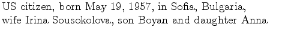
University Education
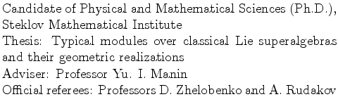
Fellowship and Awards
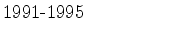
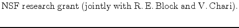
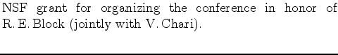
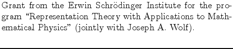
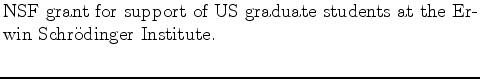
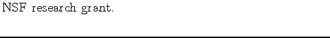
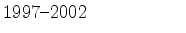
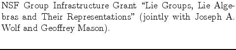
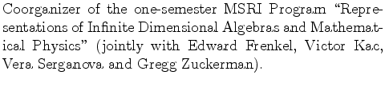
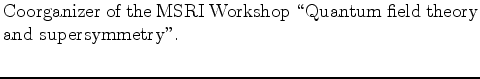
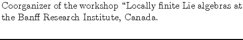
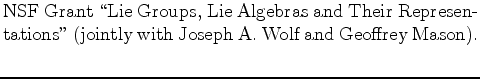
Professional Experience
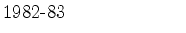
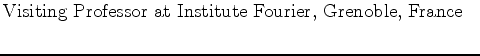
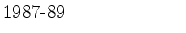
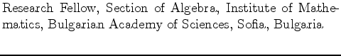
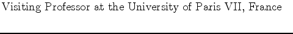
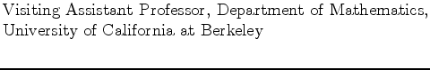
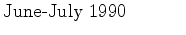
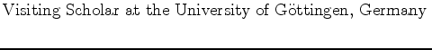
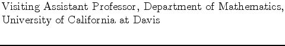
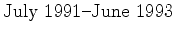
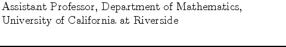
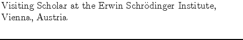
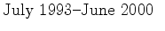
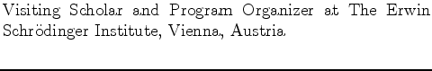
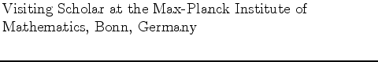
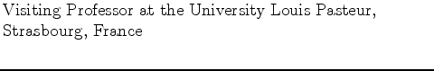
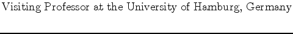
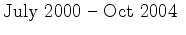
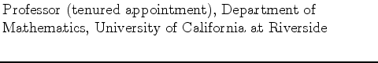
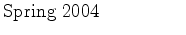
Main Research Interests
Representations of finite and infinite dimensional Lie algebras, generalized Harish-Chandra modules, representations of Lie superalgebras and Lie supergroups, geometry of supermanifolds, homogeneous superspaces, super
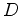
-modules, homogeneous ind-spaces and geometry of ind-varieties.
Other Professional Activities
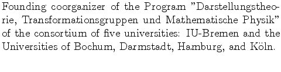
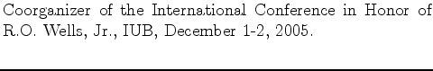
1.35 into .35 in1.The Penrose transform on general grassmannians, C.R. Acad. Sci. Bulg., 33 (1980), 1439-1442.
1.35 into .35 in2.Null-geodesics of complex Einstein spaces, Funk. Anal. i Priloz., 16, No.1 (1982), 78-79,(Russian), (with Yu.I.Manin).
1.35 into .35 in3.Linear differential operators and cohomology of analytic spaces, Uspekhi Mat. Nauk, 37, No 4 (1982), 171-172, (Russian).
1.35 into .35 in4.D-modules on supermanifolds, Invent.Math., 71 (1983), 501-512.
1.35 into .35 in5.The formalism of left and right connections on supermanifolds, (1982), Lect. on supermanifolds, geom. methods and conf. groups, editor: Döbner et al, World Scientific, Singapore, 1989, 3-13 (with Yu. I. Manin).
1.35 into .35 in6.An introduction to geometric representation theory for complex simple Lie superalgebras, Proc. Conf. Diff. Geom. Math. in Physics, Shumen 1984, World Scientific 1986, 89-106.
1.35 into .35 in7.Serre duality for projective supermanifolds, Funk. Anal. i Priloz., 18,No.1 (1984), 78-79, (Russian) (with O. Ogievetsky).
1.35 into .35 in8.Projectivity and D-affinity of flag supermanifolds, Uspekhi Math. Nauk, 40 No.1 (1985), 211-212, (Russian) (with I. Skornyakov).
1.35 into .35 in9.A geometric approach to the linear Penrose transform, Transactions AMS, 290 (1985), 555-575.
1.35 into .35 in10.Cohomologie des D-modules typiques sur les supervariétés de drapeaux, C. R. Acad. Sci., Paris, 199 (1984), 1005-1008 (with I. Skornyakov).
1.35 into .35 in11.Characters of typical irreducible finite dimensional
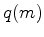
-modules, Funk. Anal. i Priloz., 20 (1986), No. 1, 37-45 (Russian).
1.35 into .35 in12.Localisation des representations typiques d'une superalgèbre de Lie complexe classique, C. R. Acad. Sci. Paris, 304 (1987), 163-166.
1.35 into .35 in13.Borel-Weil-Bott theory for classical Lie supergroups, Curr. Probl. Math., Moscow, 32 (1988), 71-124 (Russian).
1.35 into .35 in14.Elements of supergeometry, Curr. Probl. Math., Moscow, 32 (1988), 3-25, (Russian), (with Yu. I. Manin and A. Voronov).
1.35 into .35 in15.Character formulas for some classes of atypical
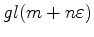
-and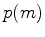
-modules, Lett. Math. Phys., 16 (1988), 251-261 (with V. Serganova).
1.35 into .35 in16.Cohomology of
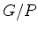
for classical complex Lie supergroups and characters of some atypical G-modules, Annales Fourier, 39 (1989), 845-873, (with V. Serganova).
1.35 into .35 in17.Generic irreducible representations of classical Lie superalgebras, Lecture Notes in Physics, 375 (1991), Springer Verlag, Berlin, 311-319 (with V. Serganova).
1.35 into .35 in18.Representations of classical Lie superalgebras of type 1, Indag. Math., N.S. 3(2), (1992), 419-466 (with V. Serganova).
1.35 into .35 in19.Generic representations of classical Lie superalgebras and their localisation, Monatsh. Math., 118 (1994), 267-313.
1.35 into .35 in20.Generic irreducible representations of finite-dimensional Lie superalgebras, Intern. Journ. Math., 5 (1994), 389-419 (with V. Serganova).
1.35 into .35 in21.Partially and fully integrable modules over Lie superalgebras, Studies in Advanced Mathematics (series editor S.-T. Yau), 4, AMS and Internatl. Press 1997, 49-67 (with I. Dimitrov).
1.35 into .35 in22.Characters of irreducible -modules and cohomology of for the Lie supergroup
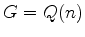
, Journ. of Math. Sci. 84 (1997), 1382-1412 (with V. Serganova).
1.35 into .35 in23.Characters of finite-dimensional irreducible
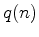
-modules, Lett. Math. Phys. 40 (1997), 147-158 (with V. Serganova).
1.35 into .35 in24.Characters of strongly generic irreducible Lie superalgebra representations, Intern. Journ. Math. 9 (1998), 331-366.
1.35 into .35 in25.Partially integrable highest weight modules, Transformation Groups 3 (1998), 241-253 (with I. Dimitrov).
1.35 into .35 in26.The support of an irreducible Lie algebra representation, Journ. of Algebra 209 (1998), 129-142 (with V. Serganova).
1.35 into .35 in27.Weight modules of direct limit Lie algebras, IMRN 1999, no. 5, 223-249 (with I. Dimitrov).
1.35 into .35 in28.Weight representations of the Cartan type Lie algebras
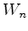
and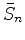
, Math. Research Lett. 6 (1999), 397-416. (with V. Serganova).
1.35 into .35 in29.On the structure of weight modules, Transactions AMS 352 (2000), 2857-2869 (with I. Dimitrov and O. Mathieu).
1.35 into .35 in30.Generalized Harish-Chandra modules, Moscow Math. Journal 2 (2002), 753-767 (with V. Serganova).
1.35 into .35 in31.A Bott-Borel-Weil theory for direct limits of algebraic groups, American Journ. of Math. 124 (2002), 955-998 (with I. Dimitrov and J. A. Wolf).
1.35 into .35 in32.Locally finite Lie algebras with root decomposition, Archiv der Math. 80 (2003) 478-485 (with H. Strade).
1.35 into .35 in33.Cartan subalgebras of
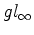
, Canadian Math. Bull., 46 (4), 2003, 597-616 (with K.-H. Neeb).
1.35 into .35 in34.Finite rank vector bundles on inductive limits of grassmannians, IMRN 2003, no. 34, 1871-1887 (with J. Donin).
1.35 into .35 in35.Classically semisimple locally finite Lie superalgebras, Forum Math. 16 (2004), 431-446.
1.35 into .35 in36.On the existence of (g,k)-modules of finite type, Duke Math. Journal 125 (2004), 329-349 (with V. Serganova and G. Zuckerman).
1.35 into .35 in37.A Reduction Theorem for Highest Weight Modules over Toroidal Lie Algebras, Comm. Math. Physics 250(2004), no. 1, 47-53 (with I. Dimitrov and V. Futorny).
1.35 into .35 in38.Generalized Harish-Chandra modules: a new direction of the structure theory of representations, Acta Applicandae Mathematicae, 81(2004), 311-326(with G. Zuckerman).
1.35 into .35 in39.Ind-varieties of generalized flags as homogeneous spaces for classical ind-groups, IMRN 2004, no. 55, 2935-2953(with I. Dimitrov).
1.35 into .35 in40.Borel subalgebras of
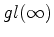
, Resenhas IME-USP 6 (2004),111-119(with I. Dimitrov).
1.35 into .35 in41.Generalized Harish-Chandra modules with generic minimal k-type, Asian Journal of Mathematics 8(2004), 795-812(with G. Zuckerman).
1.35 into .35 in42.A construction of generalized Harish-Chandra modules with arbitrary minimal k-type, Canad. Math. Bull., to appear (with G. Zuckerman).
1.35 into .35 in43.Cartan subalgebras of root-reductive Lie algebras, preprint, 2006, 28pp, (with E. Dan-Cohen and N. Snyder).
1.35 into .35 in44.A construction of generalized Harish-Chandra modules for locally reductive Lie Algebras, in preparation (with G. Zuckerman).
1.35 into .35 in45.A Borel-Weil-Bott Theorem for Diagonal Ind-Groups, in preparation(with I. Dimitrov).
1.35 into .35 in46.Bounded generalized Harish-Chandra modules, in preparation (with V. Serganova and G. Zuckerman).
1.35 into .35 in47.Lectures on Locally Finite Lie algebras and Their Representations with a View Towards Open Problems, in preparation.